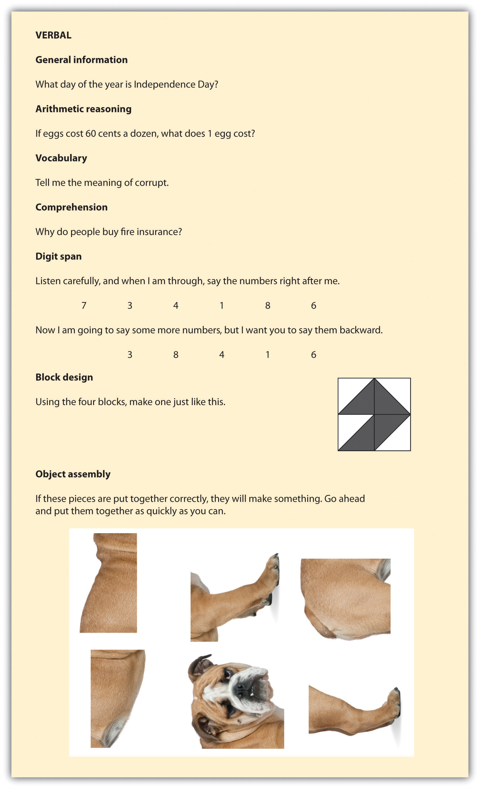

Psychologists have long debated how to best conceptualize and measure intelligence (Sternberg, 2003).Sternberg, R. J. (2003). Contemporary theories of intelligence. In W. M. Reynolds & G. E. Miller (Eds.), Handbook of psychology: Educational psychology (Vol. 7, pp. 23–45). Hoboken, NJ: John Wiley & Sons. These questions include how many types of intelligence there are, the role of nature versus nurture in intelligence, how intelligence is represented in the brain, and the meaning of group differences in intelligence.
In the early 1900s, the French psychologist Alfred Binet (1857–1914) and his colleague Henri Simon (1872–1961) began working in Paris to develop a measure that would differentiate students who were expected to be better learners from students who were expected to be slower learners. The goal was to help teachers better educate these two groups of students. Binet and Simon developed what most psychologists today regard as the first intelligence test, which consisted of a wide variety of questions that included the ability to name objects, define words, draw pictures, complete sentences, compare items, and construct sentences.
Binet and Simon (Binet, Simon, & Town, 1915; Siegler, 1992)Binet, A., Simon, T., & Town, C. H. (1915). A method of measuring the development of the intelligence of young children (3rd ed.) Chicago, IL: Chicago Medical Book; Siegler, R. S. (1992). The other Alfred Binet. Developmental Psychology, 28(2), 179–190. believed that the questions they asked their students, even though they were on the surface dissimilar, all assessed the basic abilities to understand, reason, and make judgments. And it turned out that the correlations among these different types of measures were in fact all positive; students who got one item correct were more likely to also get other items correct, even though the questions themselves were very different.
On the basis of these results, the psychologist Charles Spearman (1863–1945) hypothesized that there must be a single underlying construct that all of these items measure. He called the construct that the different abilities and skills measured on intelligence tests have in common the general intelligence factor (g)The construct that the different abilities and skills measured on intelligence tests have in common.. Virtually all psychologists now believe that there is a generalized intelligence factor, g, that relates to abstract thinking and that includes the abilities to acquire knowledge, to reason abstractly, to adapt to novel situations, and to benefit from instruction and experience (Gottfredson, 1997; Sternberg, 2003).Gottfredson, L. S. (1997). Mainstream science on intelligence: An editorial with 52 signatories, history and bibliography. Intelligence, 24(1), 13–23; Sternberg, R. J. (2003). Contemporary theories of intelligence. In W. M. Reynolds & G. E. Miller (Eds.), Handbook of psychology: Educational psychology (Vol. 7, pp. 23–45). Hoboken, NJ: John Wiley & Sons. People with higher general intelligence learn faster.
Soon after Binet and Simon introduced their test, the American psychologist Lewis Terman (1877–1956) developed an American version of Binet’s test that became known as the Stanford-Binet Intelligence Test. The Stanford-Binet is a measure of general intelligence made up of a wide variety of tasks including vocabulary, memory for pictures, naming of familiar objects, repeating sentences, and following commands.
Although there is general agreement among psychologists that g exists, there is also evidence for specific intelligence (s)A measure of a specific skill in a narrow domain., a measure of specific skills in narrow domains. One empirical result in support of the idea of s comes from intelligence tests themselves. Although the different types of questions do correlate with each other, some items correlate more highly with each other than do other items; they form clusters or clumps of intelligences.
One distinction is between fluid intelligence, which refers to the capacity to learn new ways of solving problems and performing activities, and crystallized intelligence, which refers to the accumulated knowledge of the world we have acquired throughout our lives (Salthouse, 2004).Salthouse, T. A. (2004). What and when of cognitive aging. Current Directions in Psychological Science, 13(4), 140–144. These intelligences must be different because crystallized intelligence increases with age—older adults are as good as or better than young people in solving crossword puzzles—whereas fluid intelligence tends to decrease with age (Horn, Donaldson, & Engstrom, 1981; Salthouse, 2004).Horn, J. L., Donaldson, G., & Engstrom, R. (1981). Apprehension, memory, and fluid intelligence decline in adulthood. Research on Aging, 3(1), 33–84; Salthouse, T. A. (2004). What and when of cognitive aging. Current Directions in Psychological Science, 13(4), 140–144.
Other researchers have proposed even more types of intelligences. L. L. Thurstone (1938)Thurstone, L. L. (1938). Primary mental abilities. Psychometric Monographs, No. 1. Chicago, IL: University of Chicago Press. proposed that there were seven clusters of primary mental abilities, made up of word fluency, verbal comprehension, spatial ability, perceptual speed, numerical ability, inductive reasoning, and memory. But even these dimensions tend to be at least somewhat correlated, showing again the importance of g.
One advocate of the idea of multiple intelligences is the psychologist Robert Sternberg. Sternberg has proposed a triarchic (three-part) theory of intelligenceA theory proposed by Robert Sternberg that suggests that people may display more or less analytical intelligence, creative intelligence, and practical intelligence. that proposes that people may display more or less analytical intelligence, creative intelligence, and practical intelligence. Sternberg (1985, 2003)Sternberg, R. J. (1985). Beyond IQ: A triarchic theory of human intelligence. New York, NY: Cambridge University Press; Sternberg, R. J. (2003). Our research program validating the triarchic theory of successful intelligence: Reply to Gottfredson. Intelligence, 31(4), 399–413. argued that traditional intelligence tests assess analytical intelligence, the ability to answer problems with a single right answer, but that they do not well assess creativity (the ability to adapt to new situations and create new ideas) or practicality (e.g., the ability to write good memos or to effectively delegate responsibility).
As Sternberg proposed, research has found that creativity is not highly correlated with analytical intelligence (Furnham & Bachtiar, 2008),Furnham, A., & Bachtiar, V. (2008). Personality and intelligence as predictors of creativity. Personality and Individual Differences, 45(7), 613–617. and exceptionally creative scientists, artists, mathematicians, and engineers do not score higher on intelligence than do their less creative peers (Simonton, 2000).Simonton, D. K. (2000). Creativity: Cognitive, personal, developmental, and social aspects. American Psychologist, 55(1), 151–158. Furthermore, the brain areas that are associated with convergent thinking, thinking that is directed toward finding the correct answer to a given problem, are different from those associated with divergent thinking, the ability to generate many different ideas for or solutions to a single problem (Tarasova, Volf, & Razoumnikova, 2010).Tarasova, I. V., Volf, N. V., & Razoumnikova, O. M. (2010). Parameters of cortical interactions in subjects with high and low levels of verbal creativity. Human Physiology, 36(1), 80–85. On the other hand, being creative often takes some of the basic abilities measured by g, including the abilities to learn from experience, to remember information, and to think abstractly (Bink & Marsh, 2000).Bink, M. L., & Marsh, R. L. (2000). Cognitive regularities in creative activity. Review of General Psychology, 4(1), 59–78.
Studies of creative people suggest at least five components that are likely to be important for creativity:
The last aspect of the triarchic model, practical intelligence, refers primarily to intelligence that cannot be gained from books or formal learning. Practical intelligence represents a type of “street smarts” or “common sense” that is learned from life experiences. Although a number of tests have been devised to measure practical intelligence (Sternberg, Wagner, & Okagaki, 1993; Wagner & Sternberg, 1985),Sternberg, R. J., Wagner, R. K., & Okagaki, L. (1993). Practical intelligence: The nature and role of tacit knowledge in work and at school. In J. M. Puckett & H. W. Reese (Eds.), Mechanisms of everyday cognition (pp. 205–227). Hillsdale, NJ: Lawrence Erlbaum Associates; Wagner, R., & Sternberg, R. (1985). Practical intelligence in real-world pursuits: The role of tacit knowledge. Journal of Personality and Social Psychology, 49(2), 436–458. research has not found much evidence that practical intelligence is distinct from g or that it is predictive of success at any particular tasks (Gottfredson, 2003).Gottfredson, L. S. (2003). Dissecting practical intelligence theory: Its claims and evidence. Intelligence, 31(4), 343–397. Practical intelligence may include, at least in part, certain abilities that help people perform well at specific jobs, and these abilities may not always be highly correlated with general intelligence (Sternberg, Wagner, & Okagaki, 1993).Sternberg, R. J., Wagner, R. K., & Okagaki, L. (1993). Practical intelligence: The nature and role of tacit knowledge in work and at school. In J. M. Puckett & H. W. Reese (Eds.), Mechanisms of everyday cognition (pp. 205–227). Hillsdale, NJ: Lawrence Erlbaum Associates. On the other hand, these abilities or skills are very specific to particular occupations and thus do not seem to represent the broader idea of intelligence.
Another champion of the idea of multiple intelligences is the psychologist Howard Gardner (1983, 1999).Gardner, H. (1983). Frames of mind: The theory of multiple intelligences. New York, NY: Basic Books; Gardner, H. (1999). Intelligence reframed: Multiple intelligences for the 21st century. New York, NY: Basic Books. Gardner argued that it would be evolutionarily functional for different people to have different talents and skills, and proposed that there are eight intelligences that can be differentiated from each other (Table 9.1 "Howard Gardner’s Eight Specific Intelligences"). Gardner noted that some evidence for multiple intelligences comes from the abilities of autistic savants, people who score low on intelligence tests overall but who nevertheless may have exceptional skills in a given domain, such as math, music, art, or in being able to recite statistics in a given sport (Treffert & Wallace, 2004).Treffert, D. A., & Wallace, G. L. (2004, January 1). Islands of genius. Scientific American, 14–23. Retrieved from http://gordonresearch.com/articles_autism/SciAm-Islands_of_Genius.pdf
Table 9.1 Howard Gardner’s Eight Specific Intelligences
| Intelligence | Description |
|---|---|
| Linguistic | The ability to speak and write well |
| Logico-mathematical | The ability to use logic and mathematical skills to solve problems |
| Spatial | The ability to think and reason about objects in three dimensions |
| Musical | The ability to perform and enjoy music |
| Kinesthetic (body) | The ability to move the body in sports, dance, or other physical activities |
| Interpersonal | The ability to understand and interact effectively with others |
| Intrapersonal | The ability to have insight into the self |
| Naturalistic | The ability to recognize, identify, and understand animals, plants, and other living things |
Source: Adapted from Gardner, H. (1999). Intelligence reframed: Multiple intelligences for the 21st century. New York, NY: Basic Books.
The idea of multiple intelligences has been influential in the field of education, and teachers have used these ideas to try to teach differently to different students. For instance, to teach math problems to students who have particularly good kinesthetic intelligence, a teacher might encourage the students to move their bodies or hands according to the numbers. On the other hand, some have argued that these “intelligences” sometimes seem more like “abilities” or “talents” rather than real intelligence. And there is no clear conclusion about how many intelligences there are. Are sense of humor, artistic skills, dramatic skills, and so forth also separate intelligences? Furthermore, and again demonstrating the underlying power of a single intelligence, the many different intelligences are in fact correlated and thus represent, in part, g (Brody, 2003).Brody, N. (2003). Construct validation of the Sternberg Triarchic abilities test: Comment and reanalysis. Intelligence, 31(4), 319–329.
The goal of most intelligence tests is to measure g, the general intelligence factor. Good intelligence tests are reliable, meaning that they are consistent over time, and also demonstrate construct validity, meaning that they actually measure intelligence rather than something else. Because intelligence is such an important individual difference dimension, psychologists have invested substantial effort in creating and improving measures of intelligence, and these tests are now the most accurate of all psychological tests. In fact, the ability to accurately assess intelligence is one of the most important contributions of psychology to everyday public life.
Intelligence changes with age. A 3-year-old who could accurately multiply 183 by 39 would certainly be intelligent, but a 25-year-old who could not do so would be seen as unintelligent. Thus understanding intelligence requires that we know the norms or standards in a given population of people at a given age. The standardizationAdministering a test to a large number of people at different ages and computing the average score on the test at each age level. of a test involves giving it to a large number of people at different ages and computing the average score on the test at each age level.
It is important that intelligence tests be standardized on a regular basis, because the overall level of intelligence in a population may change over time. The Flynn effectThe observation that scores on intelligence tests worldwide have increased substantially over the past decades. refers to the observation that scores on intelligence tests worldwide have increased substantially over the past decades (Flynn, 1999).Flynn, J. R. (1999). Searching for justice: The discovery of IQ gains over time. American Psychologist, 54(1), 5–20. Although the increase varies somewhat from country to country, the average increase is about 3 IQ points every 10 years. There are many explanations for the Flynn effect, including better nutrition, increased access to information, and more familiarity with multiple-choice tests (Neisser, 1998).Neisser, U. (Ed.). (1998). The rising curve. Washington, DC: American Psychological Association. But whether people are actually getting smarter is debatable (Neisser, 1997).Neisser, U. (1997). Rising scores on intelligence tests. American Scientist, 85, 440–447.
Once the standardization has been accomplished, we have a picture of the average abilities of people at different ages and can calculate a person’s mental ageThe age at which a person is performing intellectually., which is the age at which a person is performing intellectually. If we compare the mental age of a person to the person’s chronological age, the result is the intelligence quotient (IQ)A measure of intelligence that is adjusted for age., a measure of intelligence that is adjusted for age. A simple way to calculate IQ is by using the following formula:
IQ = mental age ÷ chronological age × 100.Thus a 10-year-old child who does as well as the average 10-year-old child has an IQ of 100 (10 ÷ 10 × 100), whereas an 8-year-old child who does as well as the average 10-year-old child would have an IQ of 125 (10 ÷ 8 × 100). Most modern intelligence tests are based the relative position of a person’s score among people of the same age, rather than on the basis of this formula, but the idea of an intelligence “ratio” or “quotient” provides a good description of the score’s meaning.
A number of scales are based on the IQ. The Wechsler Adult lntelligence Scale (WAIS)The most widely used intelligence test for adults. is the most widely used intelligence test for adults (Watkins, Campbell, Nieberding, & Hallmark, 1995).Watkins, C. E., Campbell, V. L., Nieberding, R., & Hallmark, R. (1995). Contemporary practice of psychological assessment by clinical psychologists. Professional Psychology: Research and Practice, 26(1), 54–60. The current version of the WAIS, the WAIS-IV, was standardized on 2,200 people ranging from 16 to 90 years of age. It consists of 15 different tasks, each designed to assess intelligence, including working memory, arithmetic ability, spatial ability, and general knowledge about the world (see Figure 9.4 "Sample Items From the Wechsler Adult Intelligence Scale (WAIS)"). The WAIS-IV yields scores on four domains: verbal, perceptual, working memory, and processing speed. The reliability of the test is high (more than 0.95), and it shows substantial construct validity. The WAIS-IV is correlated highly with other IQ tests such as the Stanford-Binet, as well as with criteria of academic and life success, including college grades, measures of work performance, and occupational level. It also shows significant correlations with measures of everyday functioning among the mentally retarded.
The Wechsler scale has also been adapted for preschool children in the form of the Wechsler Primary and Preschool Scale of Intelligence (WPPSI-III) and for older children and adolescents in the form of the Wechsler Intelligence Scale for Children (WISC-IV).
Figure 9.4 Sample Items From the Wechsler Adult Intelligence Scale (WAIS)
Source: Adapted from Thorndike, R. L., & Hagen, E. P. (1997). Cognitive Abilities Test (Form 5): Research handbook. Chicago, IL: Riverside Publishing.
The intelligence tests that you may be most familiar with are aptitude tests, which are designed to measure one’s ability to perform a given task, for instance, to do well in college or in postgraduate training. Most U.S. colleges and universities require students to take the Scholastic Assessment Test (SAT) or the American College Test (ACT), and postgraduate schools require the Graduate Record Examination (GRE), Medical College Admissions Test (MCAT), or the Law School Admission Test (LSAT). These tests are useful for selecting students because they predict success in the programs that they are designed for, particularly in the first year of the program (Kuncel, Hezlett, & Ones, 2010).Kuncel, N. R., Hezlett, S. A., & Ones, D. S. (2010). A comprehensive meta-analysis of the predictive validity of the graduate record examinations: Implications for graduate student selection and performance. Psychological Bulletin, 127(1), 162–181. These aptitude tests also measure, in part, intelligence. Frey and Detterman (2004)Frey, M. C., & Detterman, D. K. (2004). Scholastic assessment or g? The relationship between the scholastic assessment test and general cognitive ability. Psychological Science, 15(6), 373–378. found that the SAT correlated highly (between about r = .7 and r = .8) with standard measures of intelligence.
Intelligence tests are also used by industrial and organizational psychologists in the process of personnel selection. Personnel selectionThe use of structured tests to select people who are likely to perform well at given jobs. is the use of structured tests to select people who are likely to perform well at given jobs (Schmidt & Hunter, 1998).Schmidt, F. L., & Hunter, J. E. (1998). The validity and utility of selection methods in personnel psychology: Practical and theoretical implications of 85 years of research findings. Psychological Bulletin, 124, 262–274. The psychologists begin by conducting a job analysis in which they determine what knowledge, skills, abilities, and personal characteristics (KSAPs) are required for a given job. This is normally accomplished by surveying and/or interviewing current workers and their supervisors. Based on the results of the job analysis, the psychologists choose selection methods that are most likely to be predictive of job performance. Measures include tests of cognitive and physical ability and job knowledge tests, as well as measures of IQ and personality.
The brain processes underlying intelligence are not completely understood, but current research has focused on four potential factors: brain size, sensory ability, speed and efficience of neural transmission, and working memory capacity.
There is at least some truth to the idea that smarter people have bigger brains. Studies that have measured brain volume using neuroimaging techniques find that larger brain size is correlated with intelligence (McDaniel, 2005),McDaniel, M. A. (2005). Big-brained people are smarter: A meta-analysis of the relationship between in vivo brain volume and intelligence. Intelligence, 33(4), 337–346. and intelligence has also been found to be correlated with the number of neurons in the brain and with the thickness of the cortex (Haier, 2004; Shaw et al., 2006).Haier, R. J. (2004). Brain imaging studies of personality: The slow revolution. In R. M. Stelmack (Ed.), On the psychobiology of personality: Essays in honor of Marvin Zuckerman (pp. 329–340). New York, NY: Elsevier Science; Shaw, P., Greenstein, D., Lerch, J., Clasen, L., Lenroot, R., Gogtay, N.,…Giedd, J. (2006). Intellectual ability and cortical development in children and adolescents. Nature, 440(7084), 676–679. It is important to remember that these correlational findings do not mean that having more brain volume causes higher intelligence. It is possible that growing up in a stimulating environment that rewards thinking and learning may lead to greater brain growth (Garlick, 2003),Garlick, D. (2003). Integrating brain science research with intelligence research. Current Directions in Psychological Science, 12(5), 185–189. and it is also possible that a third variable, such as better nutrition, causes both brain volume and intelligence.
Another possibility is that the brains of more intelligent people operate faster or more efficiently than the brains of the less intelligent. Some evidence supporting this idea comes from data showing that people who are more intelligent frequently show less brain activity (suggesting that they need to use less capacity) than those with lower intelligence when they work on a task (Haier, Siegel, Tang, & Abel, 1992).Haier, R. J., Siegel, B. V., Tang, C., & Abel, L. (1992). Intelligence and changes in regional cerebral glucose metabolic rate following learning. Intelligence, 16(3–4), 415–426. And the brains of more intelligent people also seem to run faster than the brains of the less intelligent. Research has found that the speed with which people can perform simple tasks—such as determining which of two lines is longer or pressing, as quickly as possible, one of eight buttons that is lighted—is predictive of intelligence (Deary, Der, & Ford, 2001).Deary, I. J., Der, G., & Ford, G. (2001). Reaction times and intelligence differences: A population-based cohort study. Intelligence, 29(5), 389–399. Intelligence scores also correlate at about r = .5 with measures of working memory (Ackerman, Beier, & Boyle, 2005),Ackerman, P. L., Beier, M. E., & Boyle, M. O. (2005). Working memory and intelligence: The same or different constructs? Psychological Bulletin, 131(1), 30–60. and working memory is now used as a measure of intelligence on many tests.
Although intelligence is not located in a specific part of the brain, it is more prevalent in some brain areas than others. Duncan et al. (2000)Duncan, J., Seitz, R. J., Kolodny, J., Bor, D., Herzog, H., Ahmed, A.,…Emslie, H. (2000). A neural basis for general intelligence. Science, 289(5478), 457–460. administered a variety of intelligence tasks and observed the places in the cortex that were most active. Although different tests created different patterns of activation, as you can see in Figure 9.5 "Where Is Intelligence?", these activated areas were primarily in the outer parts of the cortex, the area of the brain most involved in planning, executive control, and short-term memory.
Figure 9.5 Where Is Intelligence?

fMRI studies have found that the areas of the brain most related to intelligence are in the outer parts of the cortex.
Source: Adapted from Duncan, J., Seitz, R. J., Kolodny, J., Bor, D., Herzog, H., Ahmed, A.,…Emslie, H. (2000). A neural basis for general intelligence. Science, 289(5478), 457–460.
Intelligence has both genetic and environmental causes, and these have been systematically studied through a large number of twin and adoption studies (Neisser et al., 1996; Plomin, DeFries, Craig, & McGuffin, 2003).Neisser, U., Boodoo, G., Bouchard, T. J., Jr., Boykin, A. W., Brody, N., Ceci, S. J.,…Urbina, S. (1996). Intelligence: Knowns and unknowns. American Psychologist, 51(2), 77–101; Plomin, R. (2003). General cognitive ability. In R. Plomin, J. C. DeFries, I. W. Craig, & P. McGuffin (Eds.), Behavioral genetics in the postgenomic era (pp. 183–201). Washington, DC: American Psychological Association. These studies have found that between 40% and 80% of the variability in IQ is due to genetics, meaning that overall genetics plays a bigger role than does environment in creating IQ differences among individuals (Plomin & Spinath, 2004).Plomin, R., & Spinath, F. M. (2004). Intelligence: Genetics, genes, and genomics. Journal of Personality and Social Psychology, 86(1), 112–129. The IQs of identical twins correlate very highly (r = .86), much higher than do the scores of fraternal twins who are less genetically similar (r = .60). And the correlations between the IQs of parents and their biological children (r = .42) is significantly greater than the correlation between parents and adopted children (r = .19). The role of genetics gets stronger as children get older. The intelligence of very young children (less than 3 years old) does not predict adult intelligence, but by age 7 it does, and IQ scores remain very stable in adulthood (Deary, Whiteman, Starr, Whalley, & Fox, 2004).Deary, I. J., Whiteman, M. C., Starr, J. M., Whalley, L. J., & Fox, H. C. (2004). The impact of childhood intelligence on later life: Following up the Scottish mental surveys of 1932 and 1947. Journal of Personality and Social Psychology, 86(1), 130–147.
But there is also evidence for the role of nurture, indicating that individuals are not born with fixed, unchangeable levels of intelligence. Twins raised together in the same home have more similar IQs than do twins who are raised in different homes, and fraternal twins have more similar IQs than do nontwin siblings, which is likely due to the fact that they are treated more similarly than are siblings.
The fact that intelligence becomes more stable as we get older provides evidence that early environmental experiences matter more than later ones. Environmental factors also explain a greater proportion of the variance in intelligence for children from lower-class households than they do for children from upper-class households (Turkheimer, Haley, Waldron, D’Onofrio, & Gottesman, 2003).Turkheimer, E., Haley, A., Waldron, M., D’Onofrio, B., & Gottesman, I. I. (2003). Socioeconomic status modifies heritability of IQ in young children. Psychological Science, 14(6), 623–628. This is because most upper-class households tend to provide a safe, nutritious, and supporting environment for children, whereas these factors are more variable in lower-class households.
Social and economic deprivation can adversely affect IQ. Children from households in poverty have lower IQs than do children from households with more resources even when other factors such as education, race, and parenting are controlled (Brooks-Gunn & Duncan, 1997).Brooks-Gunn, J., & Duncan, G. J. (1997). The effects of poverty on children. The Future of Children, 7(2), 55–71. Poverty may lead to diets that are undernourishing or lacking in appropriate vitamins, and poor children may also be more likely to be exposed to toxins such as lead in drinking water, dust, or paint chips (Bellinger & Needleman, 2003).Bellinger, D. C., & Needleman, H. L. (2003). Intellectual impairment and blood lead levels [Letter to the editor]. The New England Journal of Medicine, 349(5), 500. Both of these factors can slow brain development and reduce intelligence.
If impoverished environments can harm intelligence, we might wonder whether enriched environments can improve it. Government-funded after-school programs such as Head Start are designed to help children learn. Research has found that attending such programs may increase intelligence for a short time, but these increases rarely last after the programs end (McLoyd, 1998; Perkins & Grotzer, 1997).McLoyd, V. C. (1998). Children in poverty: Development, public policy and practice. In W. Damon, I. E. Sigel, & K. A. Renninger (Eds.), Handbook of child psychology: Child psychology in practice (5th ed., Vol. 4, pp. 135–208). Hoboken, NJ: John Wiley & Sons; Perkins, D. N., & Grotzer, T. A. (1997). Teaching intelligence. American Psychologist, 52(10), 1125–1133. But other studies suggest that Head Start and similar programs may improve emotional intelligence and reduce the likelihood that children will drop out of school or be held back a grade (Reynolds, Temple, Robertson, & Mann 2001).Reynolds, A. J., Temple, J. A., Robertson, D. L., & Mann, E. A. (2001). Long-term effects of an early childhood intervention on educational achievement and juvenile arrest: A 15-year follow-up of low-income children in public schools. Journal of the American Medical Association, 285(18), 2339–2346.
Intelligence is improved by education; the number of years a person has spent in school correlates at about r = .6 with IQ (Ceci, 1991).Ceci, S. J. (1991). How much does schooling influence general intelligence and its cognitive components? A reassessment of the evidence. Developmental Psychology, 27(5), 703–722. In part this correlation may be due to the fact that people with higher IQ scores enjoy taking classes more than people with low IQ scores, and they thus are more likely to stay in school. But education also has a causal effect on IQ. Comparisons between children who are almost exactly the same age but who just do or just do not make a deadline for entering school in a given school year show that those who enter school a year earlier have higher IQ than those who have to wait until the next year to begin school (Baltes & Reinert, 1969; Ceci & Williams, 1997).Baltes, P. B., & Reinert, G. (1969). Cohort effects in cognitive development of children as revealed by cross-sectional sequences. Developmental Psychology, 1(2), 169–177; Ceci, S. J., & Williams, W. M. (1997). Schooling, intelligence, and income. American Psychologist, 52(10), 1051–1058. Children’s IQs tend to drop significantly during summer vacations (Huttenlocher, Levine, & Vevea, 1998),Huttenlocher, J., Levine, S., & Vevea, J. (1998). Environmental input and cognitive growth: A study using time-period comparisons. Child Development, 69(4), 1012–1029. a finding that suggests that a longer school year, as is used in Europe and East Asia, is beneficial.
It is important to remember that the relative roles of nature and nurture can never be completely separated. A child who has higher than average intelligence will be treated differently than a child who has lower than average intelligence, and these differences in behaviors will likely amplify initial differences. This means that modest genetic differences can be multiplied into big differences over time.
Although most psychologists have considered intelligence a cognitive ability, people also use their emotions to help them solve problems and relate effectively to others. Emotional intelligenceThe ability to identify, assess, manage, and control one’s emotions. refers to the ability to accurately identify, assess, and understand emotions, as well as to effectively control one’s own emotions (Feldman-Barrett & Salovey, 2002; Mayer, Salovey, & Caruso, 2000).Feldman-Barrett, L., & Salovey, P. (Eds.). (2002). The wisdom in feeling: Psychological processes in emotional intelligence. New York, NY: Guilford Press; Mayer, J. D., Salovey, P., & Caruso, D. (2000). Models of emotional intelligence. In R. J. Sternberg (Ed.), Handbook of intelligence (pp. 396–420). New York, NY: Cambridge University Press.
The idea of emotional intelligence is seen in Howard Gardner’s interpersonal intelligence (the capacity to understand the emotions, intentions, motivations, and desires of other people) and intrapersonal intelligence (the capacity to understand oneself, including one’s emotions). Public interest in, and research on, emotional intellgence became widely prevalent following the publication of Daniel Goleman’s best-selling book, Emotional Intelligence: Why It Can Matter More Than IQ (Goleman, 1998).Goleman, D. (1998). Working with emotional intelligence. New York, NY: Bantam Books.
There are a variety of measures of emotional intelligence (Mayer, Salovey, & Caruso, 2008; Petrides & Furnham, 2000).Mayer, J. D., Salovey, P., & Caruso, D. R. (2008). Emotional intelligence: New ability or eclectic traits. American Psychologist, 63(6), 503–517; Petrides, K. V., & Furnham, A. (2000). On the dimensional structure of emotional intelligence. Personality and Individual Differences, 29, 313–320. One popular measure, the Mayer-Salovey-Caruso Emotional Intelligence Test (http://www.emotionaliq.org), includes items about the ability to understand, experience, and manage emotions, such as these:
Contempt most closely combines which two emotions?
Debbie just came back from vacation. She was feeling peaceful and content. How well would each of the following actions help her preserve her good mood?
One problem with emotional intelligence tests is that they often do not show a great deal of reliability or construct validity (Føllesdal & Hagtvet, 2009).Føllesdal, H., & Hagtvet, K. A. (2009). Emotional intelligence: The MSCEIT from the perspective of generalizability theory. Intelligence, 37(1), 94–105. Although it has been found that people with higher emotional intelligence are also healthier (Martins, Ramalho, & Morin, 2010),Martins, A., Ramalho, N., & Morin, E. (2010). A comprehensive meta-analysis of the relationship between emotional intelligence and health. Personality and Individual Differences, 49(6), 554–564. findings are mixed about whether emotional intelligence predicts life success—for instance, job performance (Harms & Credé, 2010).Harms, P. D., & Credé, M. (2010). Emotional intelligence and transformational and transactional leadership: A meta-analysis. Journal of Leadership & Organizational Studies, 17(1), 5–17. Furthermore, other researchers have questioned the construct validity of the measures, arguing that emotional intelligence really measures knowledge about what emotions are, but not necessarily how to use those emotions (Brody, 2004),Brody, N. (2004). What cognitive intelligence is and what emotional intelligence is not. Psychological Inquiry, 15, 234–238. and that emotional intelligence is actually a personality trait, a part of g, or a skill that can be applied in some specific work situations—for instance, academic and work situations (Landy, 2005).Landy, F. J. (2005). Some historical and scientific issues related to research on emotional intelligence. Journal of Organizational Behavior, 26, 411–424.
Although measures of the ability to understand, experience, and manage emotions may not predict effective behaviors, another important aspect of emotional intelligence—emotion regulation—does. Emotion regulation refers to the ability to control and productively use one’s emotions. Research has found that people who are better able to override their impulses to seek immediate gratification and who are less impulsive also have higher cognitive and social intelligence. They have better SAT scores, are rated by their friends as more socially adept, and cope with frustration and stress better than those with less skill at emotion regulation (Ayduk et al., 2000; Eigsti et al., 2006; Mischel & Ayduk, 2004).Ayduk, O., Mendoza-Denton, R., Mischel, W., Downey, G., Peake, P. K., & Rodriguez, M. (2000). Regulating the interpersonal self: Strategic self-regulation for coping with rejection sensitivity. Journal of Personality and Social Psychology, 79(5), 776–792; Eigsti, I.-M., Zayas, V., Mischel, W., Shoda, Y., Ayduk, O., Dadlani, M. B.,…Casey, B. J. (2006). Predicting cognitive control from preschool to late adolescence and young adulthood. Psychological Science, 17(6), 478–484; Mischel, W., & Ayduk, O. (Eds.). (2004). Willpower in a cognitive-affective processing system: The dynamics of delay of gratification. New York, NY: Guilford Press.
Because emotional intelligence seems so important, many school systems have designed programs to teach it to their students. However, the effectiveness of these programs has not been rigorously tested, and we do not yet know whether emotional intelligence can be taught, or if learning it would improve the quality of people’s lives (Mayer & Cobb, 2000).Mayer, J. D., & Cobb, C. D. (2000). Educational policy on emotional intelligence: Does it make sense? Educational Psychology Review, 12(2), 163–183.